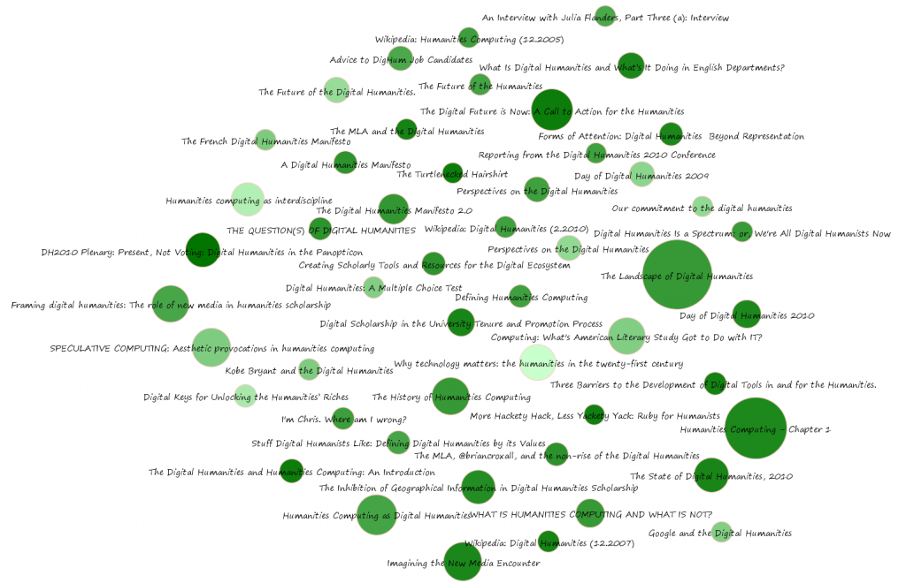

Comprehending the Digital Humanities
Topology
Topics
Documents
Data
Further Research
I tried to gather together a wide variety of texts to see how different lengths, writing styles and delivery mechanisms are handled by the topic analysis. The documents included blog posts, interviews, single and co-authored papers, manifestos, peer-produced material and chapter 1 from Willard McCarty’s Humanities Computing. If you notice a text that I should have used but missed, please leave a note about it in the comments, so that if anyone wants to perform this analysis with a larger corpus, they can have a running start.


The documents, with size indicating the raw character size of the document and darkness indicating centrality within the topic network.
The State of Digital Humanities, 2010, John Unsworth
A Digital Humanities Manifesto
The Digital Humanities Manifesto 2.0
The French Digital Humanities Manifesto
The Turtlenecked Hairshirt, Ian Bogost
The Future of the Humanities, Cathy Davidson
What Is Digital Humanities and What’s It Doing in English Departments? Matthew G. Kirschenbaum
Imagining the New Media Encounter, Alan Liu
The Landscape of Digital Humanities, Patrik Svensson
WHAT IS HUMANITIES COMPUTING AND WHAT IS NOT? John Unsworth
Humanities Computing as Digital Humanities, Patrik Svensson
Framing digital humanities: The role of new media in humanities scholarship, Oya Y. Rieger
An Interview with Julia Flanders, Part Three (a): Interview
Day of Digital Humanities 2010
Day of Digital Humanities 2009
Wikipedia: Digital Humanities (2.2010)
Wikipedia: Humanities Computing (12.2005)
Wikipedia: Digital Humanities (12.2007)
The Future of the Digital Humanities, Brett Bobley
The MLA and the Digital Humanities,William Pannapacker
The MLA, @briancroxall, and the non-rise of the Digital Humanities, David Parry
Computing: What’s American Literary Study Got to Do with IT? Martha Nell Smith
Digital Keys for Unlocking the Humanities’ Riches, Patricia Cohen
Reporting from the Digital Humanities 2010 Conference, Kathleen Fitzpatrick
Stuff Digital Humanists Like: Defining Digital Humanities by its Values, Tom Scheinfeldt
Kobe Bryant and the Digital Humanities, Cameron Blevins
I’m Chris. Where am I wrong? Chris Forster
DH2010 Plenary: Present, Not Voting: Digital Humanities in the Panopticon, Melissa Terras
Google and the Digital Humanities, Steve Kolowich
Digital Humanities Is a Spectrum; or, We’re All Digital Humanists Now, Lincoln Mullen
Our commitment to the digital humanities, John Orwant
Perspectives on the Digital Humanities, Roberto A. Busa
The History of Humanities Computing, Susan Hockey
Forms of Attention: Digital Humanities Beyond Representation, John Unsworth
The Inhibition of Geographical Information in Digital Humanities Scholarship, Martyn Jessop
SPECULATIVE COMPUTING: Aesthetic provocations in humanities computing, Johanna Drucker and Bethany Nowviskie
Defining Humanities Computing
Three Barriers to the Development of Digital Tools in and for the Humanities., Edward Vanhoutte
The Digital Future is Now: A Call to Action for the Humanities, Christine L. Borgman
The Digital Humanities and Humanities Computing: An Introduction, Susan Schreibman, Ray Siemens and John Unsworth
Perspectives on the Digital Humanities, Roberto A. Busa
Digital Scholarship in the University Tenure and Promotion Process, Joan F. Cheverie, Jennifer Boettcher and John Buschman
Why technology matters: the humanities in the twenty-first century, Stanley N. Katz
THE QUESTION(S) OF DIGITAL HUMANITIES, Neil Fraistat
Humanities Computing – Chapter 1, Willard McCarty
Digital Humanities: A Multiple Choice Test, Larry Hanley
More Hackety Hack, Less Yackety Yack: Ruby for Humanists, Ryan Cordell
Advice to DigHum Job Candidates, Cathy Davidson
Humanities computing as interdiscipline, Willard McCarty
Creating Scholarly Tools and Resources for the Digital Ecosystem, Dan Cohen
The State of Digital Humanities, 2010 32% Topic 6
The State of Digital Humanities, 2010 10% Topic 12
The State of Digital Humanities, 2010 11% Topic 14
The State of Digital Humanities, 2010 17% Topic 18
A Digital Humanities Manifesto 7% Topic 2
A Digital Humanities Manifesto 43% Topic 11
A Digital Humanities Manifesto 13% Topic 14
A Digital Humanities Manifesto 9% Topic 16
The Digital Humanities Manifesto 2.0 7% Topic 2
The Digital Humanities Manifesto 2.0 8% Topic 9
The Digital Humanities Manifesto 2.0 30% Topic 13
The Digital Humanities Manifesto 2.0 9% Topic 14
The Digital Humanities Manifesto 2.0 16% Topic 16
The Digital Humanities Manifesto 2.0 10% Topic 18
The French Digital Humanities Manifesto 10% Topic 2
The French Digital Humanities Manifesto 6% Topic 5
The French Digital Humanities Manifesto 5% Topic 13
The French Digital Humanities Manifesto 42% Topic 15
The French Digital Humanities Manifesto 10% Topic 18
The Turtlenecked Hairshirt 9% Topic 2
The Turtlenecked Hairshirt 5% Topic 7
The Turtlenecked Hairshirt 8% Topic 12
The Turtlenecked Hairshirt 11% Topic 13
The Turtlenecked Hairshirt 15% Topic 14
The Turtlenecked Hairshirt 6% Topic 15
The Turtlenecked Hairshirt 21% Topic 18
The Turtlenecked Hairshirt 5% Topic 20
The Future of the Humanities 10% Topic 2
The Future of the Humanities 7% Topic 15
The Future of the Humanities 14% Topic 16
The Future of the Humanities 34% Topic 18
The Future of the Humanities 5% Topic 20
What Is Digital Humanities and What’s It Doing in English Departments? 11% Topic 2
What Is Digital Humanities and What’s It Doing in English Departments? 5% Topic 9
What Is Digital Humanities and What’s It Doing in English Departments? 9% Topic 15
What Is Digital Humanities and What’s It Doing in English Departments? 14% Topic 16
What Is Digital Humanities and What’s It Doing in English Departments? 26% Topic 18
Imagining the New Media Encounter 27% Topic 2
Imagining the New Media Encounter 5% Topic 9
Imagining the New Media Encounter 5% Topic 13
Imagining the New Media Encounter 20% Topic 16
Imagining the New Media Encounter 13% Topic 18
Imagining the New Media Encounter 5% Topic 19
The Landscape of Digital Humanities 16% Topic 2
The Landscape of Digital Humanities 5% Topic 12
The Landscape of Digital Humanities 37% Topic 16
The Landscape of Digital Humanities 7% Topic 19
The Landscape of Digital Humanities 7% Topic 20
WHAT IS HUMANITIES COMPUTING AND WHAT IS NOT? 31% Topic 2
WHAT IS HUMANITIES COMPUTING AND WHAT IS NOT? 5% Topic 5
WHAT IS HUMANITIES COMPUTING AND WHAT IS NOT? 6% Topic 13
WHAT IS HUMANITIES COMPUTING AND WHAT IS NOT? 18% Topic 16
WHAT IS HUMANITIES COMPUTING AND WHAT IS NOT? 6% Topic 17
WHAT IS HUMANITIES COMPUTING AND WHAT IS NOT? 9% Topic 18
Humanities Computing as Digital Humanities 10% Topic 5
Humanities Computing as Digital Humanities 32% Topic 12
Humanities Computing as Digital Humanities 9% Topic 14
Humanities Computing as Digital Humanities 16% Topic 18
Humanities Computing as Digital Humanities 7% Topic 19
Humanities Computing as Digital Humanities 5% Topic 20
Framing digital humanities: The role of new media in humanities scholarship 6% Topic 2
Framing digital humanities: The role of new media in humanities scholarship 5% Topic 15
Framing digital humanities: The role of new media in humanities scholarship 56% Topic 17
Framing digital humanities: The role of new media in humanities scholarship 12% Topic 18
Framing digital humanities: The role of new media in humanities scholarship 5% Topic 19
An Interview with Julia Flanders, Part Three (a): Interview 6% Topic 1
An Interview with Julia Flanders, Part Three (a): Interview 5% Topic 2
An Interview with Julia Flanders, Part Three (a): Interview 5% Topic 4
An Interview with Julia Flanders, Part Three (a): Interview 7% Topic 5
An Interview with Julia Flanders, Part Three (a): Interview 15% Topic 6
An Interview with Julia Flanders, Part Three (a): Interview 8% Topic 17
An Interview with Julia Flanders, Part Three (a): Interview 25% Topic 18
Day of Digital Humanities 2010 49% Topic 6
Day of Digital Humanities 2010 11% Topic 12
Day of Digital Humanities 2010 11% Topic 14
Day of Digital Humanities 2010 10% Topic 18
Day of Digital Humanities 2009 8% Topic 2
Day of Digital Humanities 2009 40% Topic 4
Day of Digital Humanities 2009 9% Topic 14
Day of Digital Humanities 2009 8% Topic 19
Wikipedia: Digital Humanities (2.2010) 5% Topic 2
Wikipedia: Digital Humanities (2.2010) 6% Topic 5
Wikipedia: Digital Humanities (2.2010) 6% Topic 9
Wikipedia: Digital Humanities (2.2010) 8% Topic 12
Wikipedia: Digital Humanities (2.2010) 5% Topic 14
Wikipedia: Digital Humanities (2.2010) 5% Topic 15
Wikipedia: Digital Humanities (2.2010) 11% Topic 18
Wikipedia: Digital Humanities (2.2010) 20% Topic 19
Wikipedia: Digital Humanities (2.2010) 5% Topic 20
Wikipedia: Humanities Computing (12.2005) 5% Topic 2
Wikipedia: Humanities Computing (12.2005) 5% Topic 3
Wikipedia: Humanities Computing (12.2005) 10% Topic 6
Wikipedia: Humanities Computing (12.2005) 8% Topic 12
Wikipedia: Humanities Computing (12.2005) 5% Topic 14
Wikipedia: Humanities Computing (12.2005) 11% Topic 15
Wikipedia: Humanities Computing (12.2005) 10% Topic 16
Wikipedia: Humanities Computing (12.2005) 24% Topic 18
Wikipedia: Digital Humanities (12.2007) 7% Topic 3
Wikipedia: Digital Humanities (12.2007) 7% Topic 11
Wikipedia: Digital Humanities (12.2007) 36% Topic 12
Wikipedia: Digital Humanities (12.2007) 11% Topic 14
Wikipedia: Digital Humanities (12.2007) 14% Topic 18
Wikipedia: Digital Humanities (12.2007) 6% Topic 20
The Future of the Digital Humanities. 5% Topic 2
The Future of the Digital Humanities. 43% Topic 11
The Future of the Digital Humanities. 7% Topic 12
The Future of the Digital Humanities. 8% Topic 18
The MLA and the Digital Humanities 9% Topic 3
The MLA and the Digital Humanities 10% Topic 6
The MLA and the Digital Humanities 9% Topic 11
The MLA and the Digital Humanities 11% Topic 12
The MLA and the Digital Humanities 11% Topic 14
The MLA and the Digital Humanities 21% Topic 18
The MLA, @briancroxall, and the non-rise of the Digital Humanities 36% Topic 3
The MLA, @briancroxall, and the non-rise of the Digital Humanities 6% Topic 9
The MLA, @briancroxall, and the non-rise of the Digital Humanities 13% Topic 12
The MLA, @briancroxall, and the non-rise of the Digital Humanities 6% Topic 14
The MLA, @briancroxall, and the non-rise of the Digital Humanities 12% Topic 18
Computing: What's American Literary Study Got to Do with IT? 8% Topic 2
Computing: What's American Literary Study Got to Do with IT? 10% Topic 12
Computing: What's American Literary Study Got to Do with IT? 10% Topic 14
Computing: What's American Literary Study Got to Do with IT? 7% Topic 18
Computing: What's American Literary Study Got to Do with IT? 30% Topic 19
Digital Keys for Unlocking the Humanities’ Riches 8% Topic 2
Digital Keys for Unlocking the Humanities’ Riches 6% Topic 15
Digital Keys for Unlocking the Humanities’ Riches 37% Topic 17
Digital Keys for Unlocking the Humanities’ Riches 9% Topic 18
Digital Keys for Unlocking the Humanities’ Riches 7% Topic 19
Reporting from the Digital Humanities 2010 Conference 6% Topic 6
Reporting from the Digital Humanities 2010 Conference 5% Topic 10
Reporting from the Digital Humanities 2010 Conference 9% Topic 11
Reporting from the Digital Humanities 2010 Conference 6% Topic 12
Reporting from the Digital Humanities 2010 Conference 6% Topic 14
Reporting from the Digital Humanities 2010 Conference 6% Topic 17
Reporting from the Digital Humanities 2010 Conference 23% Topic 18
Reporting from the Digital Humanities 2010 Conference 22% Topic 19
Reporting from the Digital Humanities 2010 Conference 5% Topic 20
Stuff Digital Humanists Like: Defining Digital Humanities by its Values 5% Topic 2
Stuff Digital Humanists Like: Defining Digital Humanities by its Values 6% Topic 5
Stuff Digital Humanists Like: Defining Digital Humanities by its Values 10% Topic 9
Stuff Digital Humanists Like: Defining Digital Humanities by its Values 7% Topic 10
Stuff Digital Humanists Like: Defining Digital Humanities by its Values 15% Topic 12
Stuff Digital Humanists Like: Defining Digital Humanities by its Values 8% Topic 15
Stuff Digital Humanists Like: Defining Digital Humanities by its Values 8% Topic 18
Stuff Digital Humanists Like: Defining Digital Humanities by its Values 14% Topic 19
Stuff Digital Humanists Like: Defining Digital Humanities by its Values 6% Topic 20
Kobe Bryant and the Digital Humanities 5% Topic 9
Kobe Bryant and the Digital Humanities 76% Topic 10
Kobe Bryant and the Digital Humanities 8% Topic 14
I'm Chris. Where am I wrong? 41% Topic 9
I'm Chris. Where am I wrong? 6% Topic 14
I'm Chris. Where am I wrong? 12% Topic 16
I'm Chris. Where am I wrong? 5% Topic 19
I'm Chris. Where am I wrong? 8% Topic 20
DH2010 Plenary: Present, Not Voting: Digital Humanities in the Panopticon 11% Topic 1
DH2010 Plenary: Present, Not Voting: Digital Humanities in the Panopticon 11% Topic 2
DH2010 Plenary: Present, Not Voting: Digital Humanities in the Panopticon 6% Topic 4
DH2010 Plenary: Present, Not Voting: Digital Humanities in the Panopticon 11% Topic 9
DH2010 Plenary: Present, Not Voting: Digital Humanities in the Panopticon 15% Topic 14
DH2010 Plenary: Present, Not Voting: Digital Humanities in the Panopticon 17% Topic 19
Google and the Digital Humanities 7% Topic 2
Google and the Digital Humanities 7% Topic 5
Google and the Digital Humanities 9% Topic 14
Google and the Digital Humanities 6% Topic 18
Google and the Digital Humanities 45% Topic 20
Digital Humanities Is a Spectrum; or, We're All Digital Humanists Now 17% Topic 2
Digital Humanities Is a Spectrum; or, We're All Digital Humanists Now 42% Topic 7
Digital Humanities Is a Spectrum; or, We're All Digital Humanists Now 5% Topic 11
Digital Humanities Is a Spectrum; or, We're All Digital Humanists Now 6% Topic 14
Digital Humanities Is a Spectrum; or, We're All Digital Humanists Now 5% Topic 20
Our commitment to the digital humanities 5% Topic 2
Our commitment to the digital humanities 6% Topic 9
Our commitment to the digital humanities 5% Topic 11
Our commitment to the digital humanities 5% Topic 12
Our commitment to the digital humanities 5% Topic 13
Our commitment to the digital humanities 8% Topic 14
Our commitment to the digital humanities 46% Topic 16
Perspectives on the Digital Humanities 7% Topic 5
Perspectives on the Digital Humanities 5% Topic 13
Perspectives on the Digital Humanities 6% Topic 14
Perspectives on the Digital Humanities 51% Topic 16
Perspectives on the Digital Humanities 5% Topic 20
The History of Humanities Computing 46% Topic 5
The History of Humanities Computing 6% Topic 14
The History of Humanities Computing 12% Topic 18
The History of Humanities Computing 5% Topic 20
Forms of Attention: Digital Humanities Beyond Representation 5% Topic 1
Forms of Attention: Digital Humanities Beyond Representation 13% Topic 2
Forms of Attention: Digital Humanities Beyond Representation 9% Topic 5
Forms of Attention: Digital Humanities Beyond Representation 5% Topic 10
Forms of Attention: Digital Humanities Beyond Representation 10% Topic 12
Forms of Attention: Digital Humanities Beyond Representation 13% Topic 16
Forms of Attention: Digital Humanities Beyond Representation 7% Topic 17
Forms of Attention: Digital Humanities Beyond Representation 22% Topic 18
The Inhibition of Geographical Information in Digital Humanities Scholarship 15% Topic 2
The Inhibition of Geographical Information in Digital Humanities Scholarship 10% Topic 9
The Inhibition of Geographical Information in Digital Humanities Scholarship 5% Topic 11
The Inhibition of Geographical Information in Digital Humanities Scholarship 11% Topic 13
The Inhibition of Geographical Information in Digital Humanities Scholarship 7% Topic 14
The Inhibition of Geographical Information in Digital Humanities Scholarship 5% Topic 15
The Inhibition of Geographical Information in Digital Humanities Scholarship 10% Topic 16
The Inhibition of Geographical Information in Digital Humanities Scholarship 8% Topic 18
The Inhibition of Geographical Information in Digital Humanities Scholarship 8% Topic 20
SPECULATIVE COMPUTING: Aesthetic provocations in humanities computing 6% Topic 9
SPECULATIVE COMPUTING: Aesthetic provocations in humanities computing 75% Topic 10
SPECULATIVE COMPUTING: Aesthetic provocations in humanities computing 8% Topic 14
Defining Humanities Computing 7% Topic 2
Defining Humanities Computing 5% Topic 5
Defining Humanities Computing 5% Topic 9
Defining Humanities Computing 5% Topic 12
Defining Humanities Computing 6% Topic 14
Defining Humanities Computing 13% Topic 18
Defining Humanities Computing 32% Topic 19
Defining Humanities Computing 8% Topic 20
Three Barriers to the Development of Digital Tools in and for the Humanities. 6% Topic 5
Three Barriers to the Development of Digital Tools in and for the Humanities. 6% Topic 9
Three Barriers to the Development of Digital Tools in and for the Humanities. 6% Topic 12
Three Barriers to the Development of Digital Tools in and for the Humanities. 12% Topic 14
Three Barriers to the Development of Digital Tools in and for the Humanities. 11% Topic 18
Three Barriers to the Development of Digital Tools in and for the Humanities. 34% Topic 19
The Digital Future is Now: A Call to Action for the Humanitie 7% Topic 2
The Digital Future is Now: A Call to Action for the Humanitie 7% Topic 6
The Digital Future is Now: A Call to Action for the Humanitie 8% Topic 12
The Digital Future is Now: A Call to Action for the Humanitie 11% Topic 13
The Digital Future is Now: A Call to Action for the Humanitie 13% Topic 14
The Digital Future is Now: A Call to Action for the Humanitie 5% Topic 16
The Digital Future is Now: A Call to Action for the Humanitie 23% Topic 18
The Digital Humanities and Humanities Computing: An Introduction 13% Topic 2
The Digital Humanities and Humanities Computing: An Introduction 37% Topic 8
The Digital Humanities and Humanities Computing: An Introduction 8% Topic 11
The Digital Humanities and Humanities Computing: An Introduction 17% Topic 14
Perspectives on the Digital Humanities 6% Topic 3
Perspectives on the Digital Humanities 6% Topic 6
Perspectives on the Digital Humanities 6% Topic 12
Perspectives on the Digital Humanities 8% Topic 16
Perspectives on the Digital Humanities 9% Topic 17
Perspectives on the Digital Humanities 22% Topic 18
Perspectives on the Digital Humanities 12% Topic 19
Digital Scholarship in the University Tenure and Promotion Process 16% Topic 3
Digital Scholarship in the University Tenure and Promotion Process 5% Topic 6
Digital Scholarship in the University Tenure and Promotion Process 6% Topic 9
Digital Scholarship in the University Tenure and Promotion Process 9% Topic 12
Digital Scholarship in the University Tenure and Promotion Process 7% Topic 13
Digital Scholarship in the University Tenure and Promotion Process 11% Topic 14
Digital Scholarship in the University Tenure and Promotion Process 6% Topic 16
Digital Scholarship in the University Tenure and Promotion Process 14% Topic 18
Digital Scholarship in the University Tenure and Promotion Process 5% Topic 19
Why technology matters: the humanities in the twenty-first century 5% Topic 2
Why technology matters: the humanities in the twenty-first century 37% Topic 3
Why technology matters: the humanities in the twenty-first century 8% Topic 6
Why technology matters: the humanities in the twenty-first century 7% Topic 12
Why technology matters: the humanities in the twenty-first century 6% Topic 14
Why technology matters: the humanities in the twenty-first century 5% Topic 16
Why technology matters: the humanities in the twenty-first century 9% Topic 18
THE QUESTION(S) OF DIGITAL HUMANITIES 8% Topic 2
THE QUESTION(S) OF DIGITAL HUMANITIES 7% Topic 8
THE QUESTION(S) OF DIGITAL HUMANITIES 10% Topic 11
THE QUESTION(S) OF DIGITAL HUMANITIES 23% Topic 14
THE QUESTION(S) OF DIGITAL HUMANITIES 23% Topic 16
Humanities Computing - Chapter 1 33% Topic 6
Humanities Computing - Chapter 1 5% Topic 11
Humanities Computing - Chapter 1 11% Topic 12
Humanities Computing - Chapter 1 16% Topic 14
Humanities Computing - Chapter 1 8% Topic 17
Humanities Computing - Chapter 1 10% Topic 18
Digital Humanities: A Multiple Choice Test 5% Topic 5
Digital Humanities: A Multiple Choice Test 5% Topic 12
Digital Humanities: A Multiple Choice Test 6% Topic 14
Digital Humanities: A Multiple Choice Test 5% Topic 17
Digital Humanities: A Multiple Choice Test 9% Topic 19
Digital Humanities: A Multiple Choice Test 40% Topic 20
More Hackety Hack, Less Yackety Yack: Ruby for Humanists 21% Topic 3
More Hackety Hack, Less Yackety Yack: Ruby for Humanists 11% Topic 6
More Hackety Hack, Less Yackety Yack: Ruby for Humanists 15% Topic 12
More Hackety Hack, Less Yackety Yack: Ruby for Humanists 15% Topic 14
More Hackety Hack, Less Yackety Yack: Ruby for Humanists 8% Topic 16
More Hackety Hack, Less Yackety Yack: Ruby for Humanists 8% Topic 18
Advice to DigHum Job Candidates 5% Topic 5
Advice to DigHum Job Candidates 14% Topic 6
Advice to DigHum Job Candidates 10% Topic 9
Advice to DigHum Job Candidates 8% Topic 12
Advice to DigHum Job Candidates 6% Topic 13
Advice to DigHum Job Candidates 9% Topic 14
Advice to DigHum Job Candidates 5% Topic 16
Advice to DigHum Job Candidates 18% Topic 18
Advice to DigHum Job Candidates 5% Topic 19
Humanities computing as interdiscipline 44% Topic 1
Humanities computing as interdiscipline 5% Topic 2
Humanities computing as interdiscipline 6% Topic 7
Humanities computing as interdiscipline 6% Topic 12
Humanities computing as interdiscipline 9% Topic 14
Humanities computing as interdiscipline 5% Topic 17
Creating Scholarly Tools and Resources for the Digital Ecosystem 8% Topic 2
Creating Scholarly Tools and Resources for the Digital Ecosystem 37% Topic 13
Creating Scholarly Tools and Resources for the Digital Ecosystem 9% Topic 14
Creating Scholarly Tools and Resources for the Digital Ecosystem 5% Topic 15
Creating Scholarly Tools and Resources for the Digital Ecosystem 13% Topic 18
Creating Scholarly Tools and Resources for the Digital Ecosystem 5% Topic 20